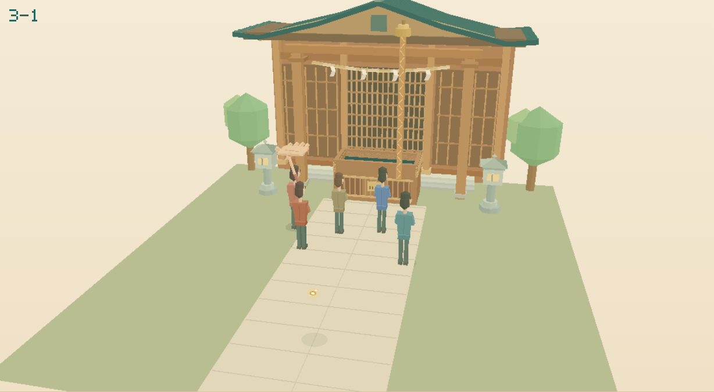
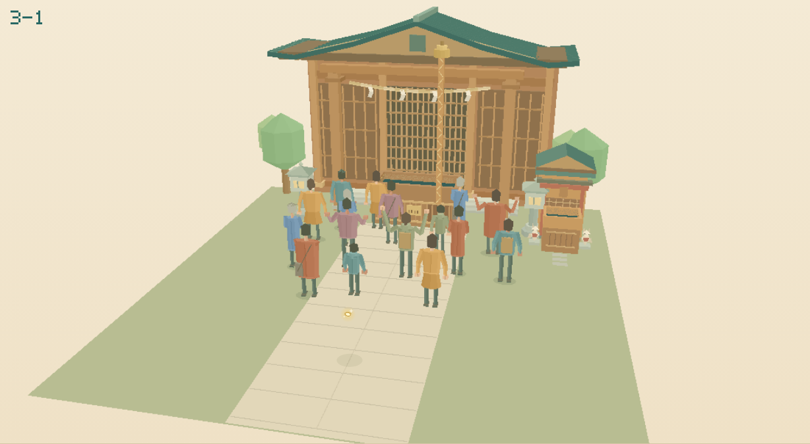
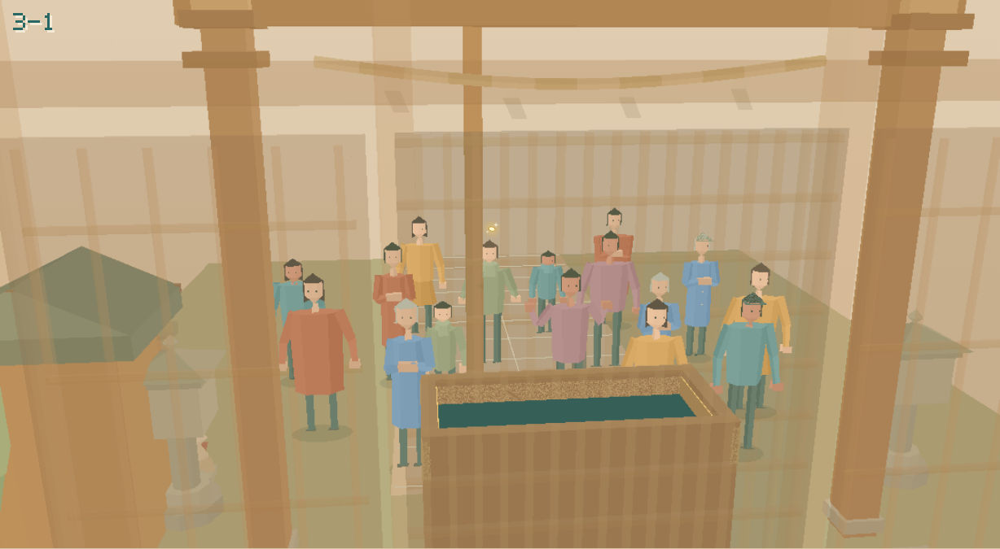
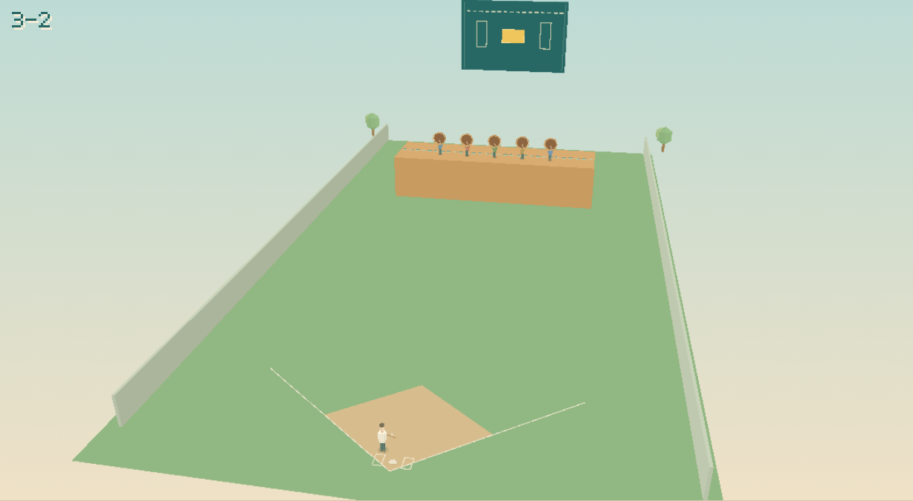
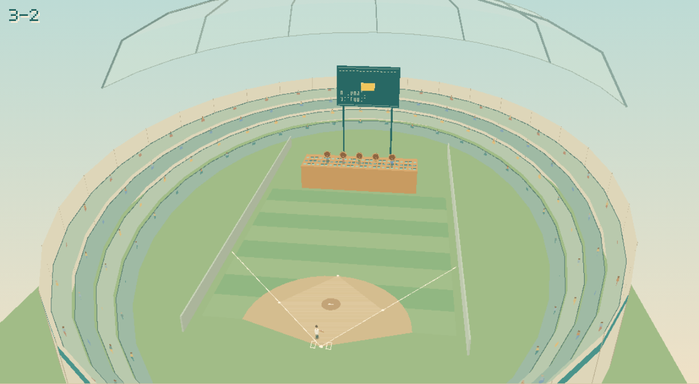
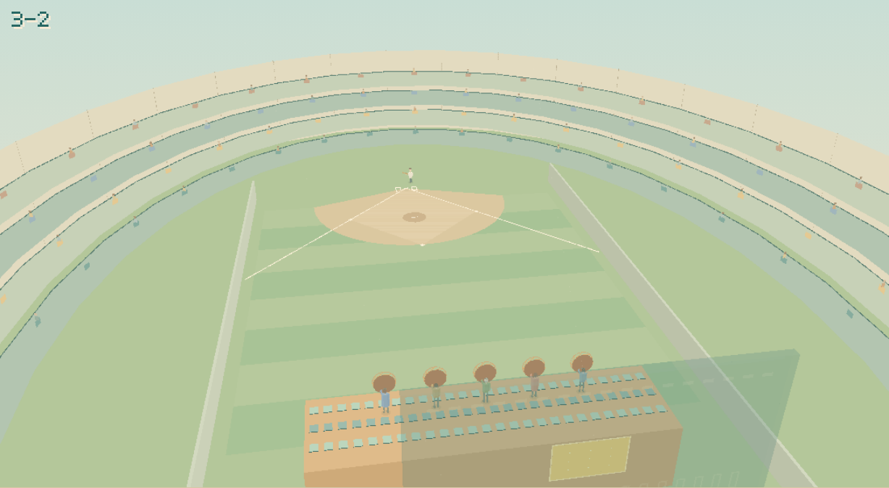
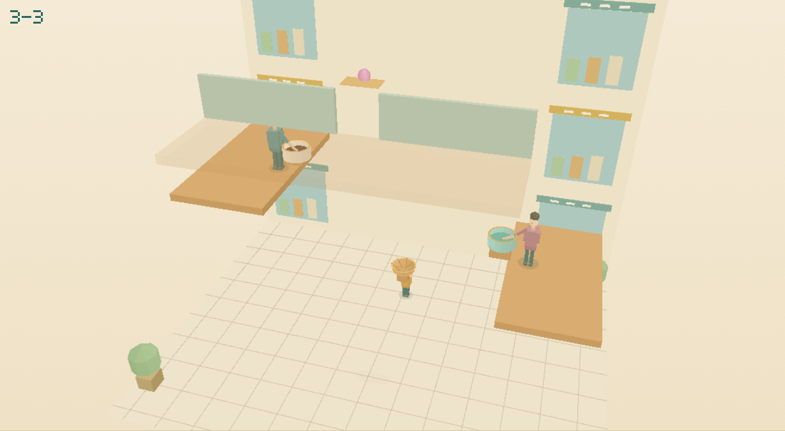
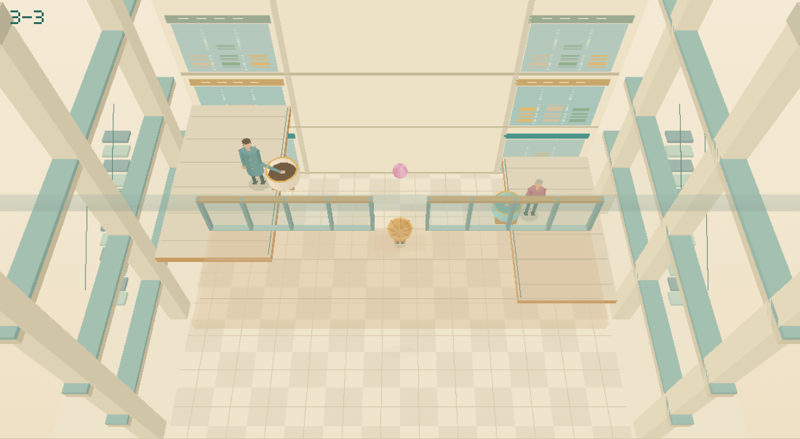
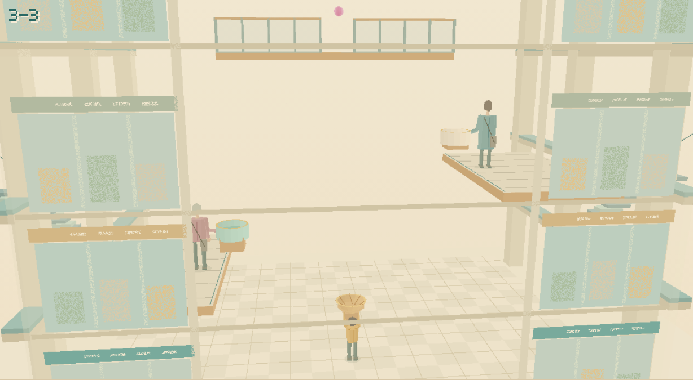

TRASHOOT
第3章の更新：神社・ドーム球場・モールの吹き抜け。
第3章を遊ぶ ↗ゲーム画面の「視点：投げ手」を押すとゴール側へ切り替わります。もう一度押すと戻ります。右ドラッグでも見回せます。
3-1 神社と脇の小さな稲荷社
参拝客を増やし、服装・背丈・髪型・参拝姿勢を作り直しました。人や動く手に当たると、小銭が跳ね返って飛び続けます。脇の稲荷の賽銭箱が新しい別解です。

更新前
更新後ゴール側から見る

ゲーム内の視点切り替えで見られます。3-2 ドーム球場
曲面の屋根、厚みのある骨組み、段状の観客席と得点板の実支柱を追加。ゴール側から、こちらへ飛んでくるボールを眺められます。

更新前
更新後ゴール側から見る

ゲーム内の視点切り替えで見られます。3-3 モールの吹き抜け
各階の店舗・手すり・柱・エスカレーターを組み、上から下のコーンへ落とす視点にしました。手前の床が目標を隠すときは切り抜いて表示します。アイスは接触するとベチャッとなる物性を維持しています。

更新前
更新後ゴール側から見る

ゲーム内の視点切り替えで見られます。2026-10-13 更新。掲載画像は実際のゲーム画面のスクリーンショットです。3-4の夜の川も引き続き遊べます。